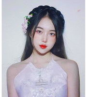
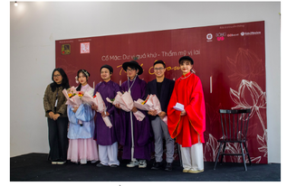

TIKTOKER TIỂU Y Y
Hoàng Thị Thu Trà hay còn được biết tới cái tên Tiểu Y Y (sinh năm 2002). Là một bạn trẻ thuộc thế hệ Gen Z tuy
vậy Thu Trà lại dành sự quan tâm và niềm yêu thích của mình với Việt phục. Đặc biệt, cô nàng này còn nhận được
rất nhiều sự chú ý thông qua các video liên quan tới cổ phục và cổ trang. Được biết, hiện Tiểu Y Y đang sở hữu
một kênh Tiktok với hơn 100K follow. Đối với những bạn trẻ cũng có niềm đam mê với Cổ phục Việt Nam, chắc hẳn sẽ
không còn xa lạ với cái tên Tiểu Y Y. Đôi chút về cô nàng này, Tiểu Y Y có tên thật là Hoàng Thị Thu Trà (sinh
năm 2002) sinh ra và lớn lên tại Hà Nam. Trà đang là sinh viên năm hai của trường Đại học Kinh tế - Đại học Quốc
gia Hà Nội. Bên cạnh việc học tập trên trường, Trà còn là mẫu ảnh tự do và là “mẫu ruột” cho một số thương hiệu
Việt phục trên địa bàn Thành phố Hà Nội.
Bên cạnh những bộ trang phục có sẵn, Thu Trà còn thể hiện được sự sáng tạo của mình khi tự tay thiết kế riêng
những trang phục theo ý thích và cách điệu riêng. Những bộ trang phục cô nàng phối vừa mang được nét hoài cổ vừa
nhận được vô vàn sự yêu thích bởi tính mới lạ của nó. Theo chia sẻ của cô nàng, bộ trang phục mà Trà yêu thích
nhất cũng chính là bộ yếm lần đầu tiên do chính tay cô thiết kế. Sau khi được bạn may giúp kiểu dáng yếm, Trà đã
tự tay mua các phụ kiện về may và trang trí. Họa tiết trên áo cũng chính là đóa hoa Trà (tên của cô) và cung
hoàng đạo của cô bạn (Thiên Bình).

Bên cạnh những bộ trang phục có sẵn, Thu Trà còn thể hiện được sự sáng tạo của mình khi tự tay thiết kế riêng
những trang phục theo ý thích và cách điệu riêng. Những bộ trang phục cô nàng phối vừa mang được nét hoài cổ vừa
nhận được vô vàn sự yêu thích bởi tính mới lạ của nó. Theo chia sẻ của cô nàng, bộ trang phục mà Trà yêu thích
nhất cũng chính là bộ yếm lần đầu tiên do chính tay cô thiết kế. Sau khi được bạn may giúp kiểu dáng yếm, Trà đã
tự tay mua các phụ kiện về may và trang trí. Họa tiết trên áo cũng chính là đóa hoa Trà (tên của cô) và cung
hoàng đạo của cô bạn (Thiên Bình).
Trà chia sẻ thêm, Việt phục đã giúp Trà che đi những khuyết điểm của cơ thể, dễ dàng “ăn gian” chiều cao, giúp
cô bạn cảm thấy tự tin hơn rất nhiều. Nhờ vậy, Thu Trà cũng dành được nhiều lời khen rằng, mặc Việt phục rất hợp
với cô, khác hẳn so với mặc quần áo hiện đại.
Cũng nhờ sự đam mê và không ngừng sáng tạo ấy, Tiểu Y Y cũng đã gắt hái được rất nhiều thành công trong công
việc mẫu ảnh cổ phục của mình. Gần đây nhất, cô nàng đã góp mặt trong buổi Talkshow mang tên “Khứ hồi” nằm trong
chuỗi hoạt động của sự kiện Cổ Mặc diễn ra ngày 25/12.

Trong Talkshow, cô nàng có cơ hội bộc bạch, chia sẻ những cảm nhận cá nhân cũng như những kiến thức về cổ phục
của mình cùng với các diễn giả của chương trình. Từ đó, giúp cho cô nàng bồi đắp và xây dựng thêm vốn hiểu biết
của mình về Cổ phục Việt Nam, góp phần đưa Cổ phục Việt Nam phổ biến rộng hơn với mọi người, mang niềm tự hào
trang phục Việt lan tỏa ra khắp mọi nơi.
Minh Anh